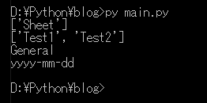
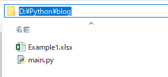
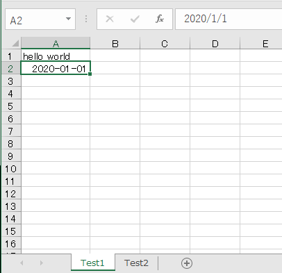
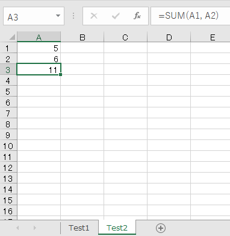
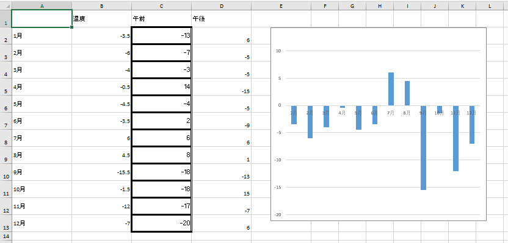

[Python] Excel(openpyxl)を扱う方法
こんにちは。明月です。
この投稿はPythonでExcel(openpyxl)を扱う方法に関する説明です。
会社で仕事する方なら必須的に知るべきなプログラムはエクセルだと思います。そのためかエクセルライブラリはどのプログラム言語でも存在します。
JavaとC#ではApache財団で提供するPOIライブラリがありますが、Pyhonは独自のライブラリがあります。
link - https://openpyxl.readthedocs.io/en/stable/usage.html
Excelファイルを生成する方法に関して説明します。
# 日付タイプモジュール
import datetime
# エクセルを使うためのモジュール
from openpyxl import Workbook
# エクセルWorkbook生成
wb = Workbook()
# Workbookを生成すれば基本的にシートが一つ生成する。
print(wb.sheetnames)
# 現在に活性化されたエクセルシートオブジェクトを持ち込む。
ws = wb.active
# シート名を変更
ws.title = "Test1"
# シート名でシートを選択することもできる。(シート名でエクセルでなければエラーが発生する。)
ws = wb["Test1"]
# シートを生成する。
ws1 = wb.create_sheet(title="Test2")
# 総しーをを出力する。
print(wb.sheetnames)
# シート内でcellを選択する方法
cell = ws.cell(row=1, column=1)
# 選択されたcellに値を入れる。
cell.value = "hello world"
# cellの文字フォーマット(generalはexcelでは一般という意味)
print(cell.number_format)
# 2行1列のセルを選択する。
cell = ws.cell(row=2, column=1)
# 選択されたcellに日付タイプの値を入れる。
cell.value = datetime.datetime(2020, 1, 1)
# セルのフォーマットを変更する。
cell.number_format = 'yyyy-mm-dd'
# cellの文字フォーマット
print(cell.number_format)
# ここはTest2のシートに値を入れる。
# セルを選択する方法はR1C1タイプで選択可能。
cell = ws1["A1"]
# 選択されたcellに値を入れる。
cell.value = 5
cell = ws1["A2"]
cell.value = 6
# 関数式(formulae)はエクセルを使う方法はstrタイプに入れればよい。
ws1["A3"] = "=SUM(A1, A2)"
# 上の作成したエクセルシートをファイルに格納する。
wb.save('Example1.xlsx')

上の結果はソース上でprint関数を使って結果を出力しました。
始めはエクセルを生成してシートの状況を確認する時にリストタイプでSheetがあることを確認できます。Workbookを生成すればSheetというシートが自動に生成されます。
次はSheetの名を「Test1」に変更し、「Test2」というシートを使いしました。また、検索すればシートが「Test1」、「Test2」があることを確認できます。
その後、セルに文字タイプのデータを入れました。タイプがGeneralということで出ました。次のセルに日付を格納して'yyyy-mm-dd'のタイプにデータを設定しました。

main.pyファイルがあるところでExample1.xlsxファイルが生成されたことを確認できます。

Test1のシートにはHello worldと日付がフォーマットに合わせて入力されたことを確認できます。

Test2のシートにはA1の値とA2の値があってSUM関数が実行されたことを確認できます。
今回はExcelファイルを生成することではなくファイルを読み込んでスタイルまで変更します。
(参考にPythonのopenpyxlはxlsタイプのエクセルは参照ができません。)

C1からD13までデータを入れればグラフが自動に変更されるエクセルシートを作成しました。
# エクセルを使うためのモジュール
from openpyxl import Workbook
from openpyxl import load_workbook
from openpyxl.styles import PatternFill, Border, Side, Alignment, Protection, Font
from random import random
# ランダム関数を利用して-20から20までのランダム値を取得する関数。
def get_random():
while True:
# ランダム関数は0から1間の実数が出る。 100を乗じて0から100を定数を変数に入れる。
ret = int(random()*100)
# 40以下ではなければランダム値を再取得
if ret < 40:
# -20から20の値に変換
return ret - 20
# エクセルを読み込む。
wb = load_workbook(filename = "TestExcel.xlsx")
# エクセルシートをactiveする。
ws = wb[wb.sheetnames[0]]
# C2からD13までのデータをランダムに入力する。
for row in range(2,14):
key = f'C{row}'
# ランダム値を入力する。
ws[key].value = get_random()
# 当該なcellのフォント設定(フォントスタイル、サイズ、太さ、イタリック、整列、アンダーバー、取り消し線、色)
ws[key].font = Font(name='Calibri',size=11,bold=False,italic=False,vertAlign=None,underline='none',strike=False,color='FF000000')
# 当該なcellのフォント設定(色スタイル、グラデーションの開始色、終了色)
ws[key].fill = PatternFill(fill_type="solid", start_color='FFFFFFFF', end_color='FF000000')
# 当該なcellの枠設定
ws[key].border = Border( left=Side(style="thick", color="000000"),
right=Side(style='double', color="000000"),
top=Side(style="thick", color="000000"),
bottom=Side(style="thick", color="000000"),
diagonal=Side(style="thick", color="000000"),
diagonal_direction=0,
outline=Side(style="thick", color="000000"),
vertical=Side(style="thick", color="000000"),
horizontal=Side(style="thick", color="000000"))
key = f'D{row}'
# ランダム値を入力する。
ws[key].value = get_random()
# 整列設定(横整列、縦整列、回転、改行..)
ws[key].alignment=Alignment(horizontal='general',vertical='bottom',text_rotation=0,wrap_text=False,shrink_to_fit=False,indent=0)
# セルの属性(閉め、隠しなど)
ws[key].protection = Protection(locked=True, hidden=False)
# 行の高さを設定する。
for row in range(1, 14):
ws.row_dimensions[row].height = 30
# 列の幅を設定する。
for col in range(65,70):
ws.column_dimensions[chr(col)].width = 20
# 列の幅を自動設定する機能が、作動しない。
ws.column_dimensions['A'].auto_size = True
# 上で作成したエクセルシートをファイルに格納する。
wb.save('Example2.xlsx')

上の例はTestExcel.xlsxファイルを読み込んでSheetの値を変更する例です。
C列とD列はrandom関数で-20から20までの数を格納します。結果はランダムなので可笑しい気温グラフになります。
そしてC列にはfont設定とバックグラウンド色設定、枠設定をしました。枠のSide関数の値はcolorの場合、HEXデータを入れるし、styleの場合、格のスタイル種類で選択ができます。
'mediumDashDot', 'mediumDashed', 'dotted', 'medium', 'thick', 'thin', 'double', 'dashed', 'slantDashDot', 'dashDot', 'dashDotDot', 'hair', 'mediumDashDotDot'
D列の場合は整列と属性を選択しました。
結果を見ればC列には枠が見えるし(バックグラウンド色は白なので差異がなさそうです。)、D列は整列に下向けになることを確認できます。
詳しい属性を参考することは下記のリンクを確認してください。
link - https://openpyxl.readthedocs.io/en/stable/styles.html
ここまでPythonでExcel(openpyxl)を扱う方法に関する説明でした。
ご不明なところや間違いところがあればコメントしてください。
- [Python] Seleniumライブラリを使う方法(自動ウェブテスト、ウェブスクレイピング)2021/10/25 19:29:00
- [Python] メール(smtplib)を送信する方法2020/07/27 18:38:43
- [Python] HttpConnection(requestsモジュール)でウェブサーバーで接続する方法2020/07/20 14:41:51
- [Python] Excel(openpyxl)を扱う方法2020/07/16 16:40:31
- [Python] ファイル圧縮、解凍(zipfile)する方法2020/07/14 19:14:22
- [Python] Apache cgiでPythonを使う方法2020/07/09 19:58:19
- [Python] Web serverを起動する方法(http.server)2020/07/09 00:13:13
- [Python] WebSocketを使う方法2020/07/07 17:29:18
- [Python] PythonとJavaのソケット通信する方法2020/07/03 18:35:50
- [Python] PythonとC#のソケット通信2020/07/01 19:28:22
- [Python] INI(環境設定ファイル)を扱う方法2020/06/30 18:26:01
- [CentOS] Redisデータベースをインストールする方法とコマンドを使い方2022/02/14 18:33:07
- [Design pattern] 3-6. ステートパターン(State pattern)2021/11/17 20:04:47
- [Design pattern] 3-5. メメントパターン(Memento pattern)2021/11/16 20:01:36
- [Design pattern] 3-4. イテレータパターン(Iterator pattern)2021/11/15 19:31:28
- [CentOS] Linux環境(CentOS)でCassandra(NoSQL DB)をインストールする方法(DBeaverブラウザでNoSQL使い方)2021/11/12 17:33:58
- [Design pattern] 3-3. コマンドパターン(Command pattern)2021/11/05 17:01:42
- [Window] apache-tomcatでロードバランシング(Load balancing)する方法とセッションクラスタリング（セッション共有）2021/11/05 16:58:45
- [Window] Apacheでmod_jkとmod_proxyの差異、apacheでtomcatのwebsocketのプロキシフォーワードする方法2021/11/05 16:55:05
- [PHP] Apache環境の同じホスト中でPHPとJava(Servlet)を同時に起動、運用する方法2021/11/05 16:52:04
- [C#] 61. ウィンドウフォーム(Window form)でスレッド(Thread)を使い方、クロススレッド問題解決2021/11/04 19:29:51
- [Design pattern] 3-2. 責任の連鎖パターン(Chain of responsibility pattern)2021/11/04 19:27:58
- [Design pattern] 3-1. ストラテジーパターン(Strategy pattern)2021/11/03 18:38:52
- [C#] 60. ウィンドウフォーム(Window form)のイベント設定する方法2021/11/02 21:18:08
- [Design pattern] 2-7. ファサードパターン(Facade pattern)2021/11/02 19:32:31
- [Design pattern] 2-6. プロキシパターン(Proxy pattern)2021/11/01 19:42:44